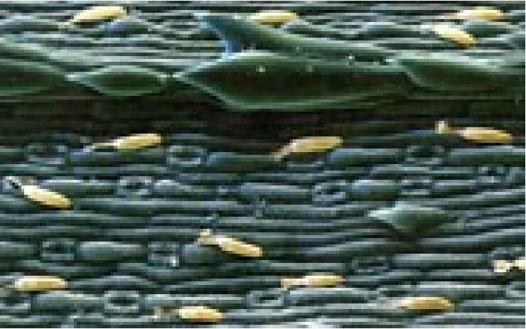

Módulo 02 · 25 minutos
Por qué una planta fabrica su propio perfume
Al terminar, vas a poder relacionar el aroma con tres funciones de la planta y explicar por qué su ubicación importa para extraerlo.
Un mensaje que no estaba dirigido a nosotros
Una flor se abre. Nosotros sentimos perfume; un insecto recibe una señal. Más abajo, una hoja libera otro olor después de ser rozada. Lo que para una persona es una experiencia agradable, para la planta puede ser invitación, advertencia o defensa.
El aroma no fue fabricado para decorar un frasco. Primero tuvo un trabajo que hacer.
Tres tareas para una misma estrategia
Los compuestos aromáticos pueden participar en tres grandes funciones:
- Proteger: ayudan a la planta frente a organismos capaces de dañarla o enfermarla.
- Repeler: vuelven menos atractiva la planta para ciertos herbívoros o insectos.
- Atraer: guían a insectos que participan en la .
No hace falta imaginar una intención consciente. La planta no decide perfumarse: produce sustancias que intervienen en sus relaciones con el ambiente. El aroma funciona como defensa y como comunicación química.
Escudo
Una hoja aromática puede convertirse en un alimento menos atractivo.
Señal
Una flor puede anunciar que ofrece una recompensa a un polinizador.
Respuesta
Algunos aromas aparecen o se intensifican cuando el tejido es dañado.
Una fábrica microscópica
¿Dónde se guarda algo capaz de evaporarse? La planta dispone de estructuras especializadas: células, cavidades, canales y glándulas. Parte aparece en el . En las flores también pueden existir .

Observación guiada
Buscá los espacios redondeados y comparalos con el tejido que los rodea. ¿El aceite parece repartido de manera uniforme? Esa distribución desigual explica por qué no toda parte de una planta ofrece el mismo rendimiento.
Extraer es abrir una arquitectura
El aceite está encerrado en una organización vegetal. Para recuperarlo será necesario liberar el contenido de glándulas, cavidades o canales y separarlo del resto del material. La extracción no crea el aroma: intenta retirarlo de la estructura que lo contenía.
Una planta puede ser intensamente aromática al rozarla y, aun así, entregar poco aceite esencial. El olor que percibimos no mide por sí solo el rendimiento. Importan la cantidad de estructuras secretoras, su ubicación, el momento de cosecha y el método utilizado.
Actividad · Leé las señales del jardín
Relacioná cada escena con la función más probable:
- Una flor libera un aroma intenso justo cuando está abierta y recibe visitas de insectos.
- Una hoja huele con fuerza después de ser mordida.
- Una planta aromática resulta poco elegida por ciertos herbívoros.
La primera orienta hacia la atracción; la segunda, hacia una respuesta protectora; la tercera, hacia la repelencia. Una misma sustancia puede participar en más de una relación, por eso hablamos de funciones probables y no de etiquetas rígidas.
El mapa se vuelve necesario
Si el aroma no está repartido de manera uniforme, decir solamente «aceite de una planta» es insuficiente. Hay que preguntar algo más preciso: ¿de la flor, de la hoja, de la madera, de la raíz o de la cáscara? La próxima parada es un mapa completo del cuerpo vegetal.
Guardá esta estación
Cuando puedas explicar la idea central con tus propias palabras, marcá el módulo como completado.